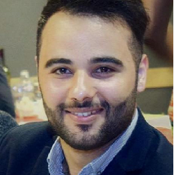

I am Russian and live in Brussels 3 years. I want to be a web-developer.
My favorite phrase: Silence is gold

Check My Github ! ^^
I like to create, type, modify the code, and make it my profession and my specialty is my goal.

you can check my github
I am conscientious and quick by nature to carry out the various missions of the day which are entrusted to me, after Becode, my goal is to continue to improve my capacity as a full stack web developer, keep learning, and get into new challenges
check my github!
what to say about me? let's start from the top! Proud father of two sons (Ethan 2 and a half years old & Arthur 1 year old) and maried to a beautifull wife. I'm in a metal band, RavenscaR, I do Streams on Twitch and i love coding too! After this formation, my goal is to find a job ASAP in a nice start up or compagny.
If Metal is Satan works... then the devil has very good taste in music!